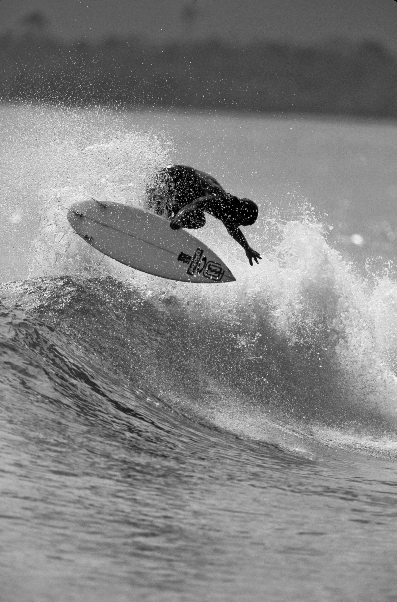
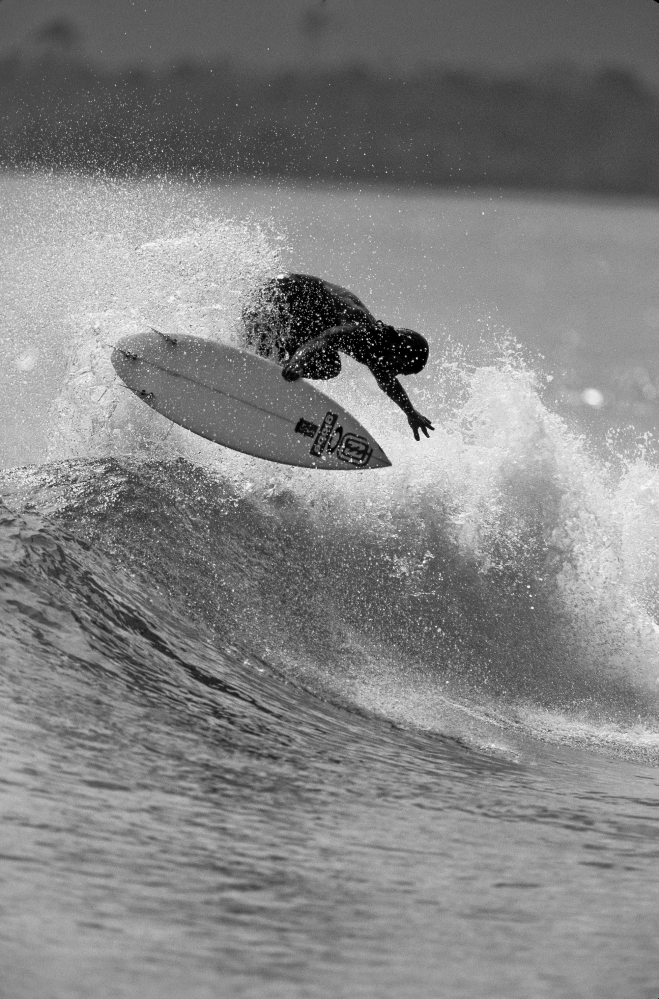
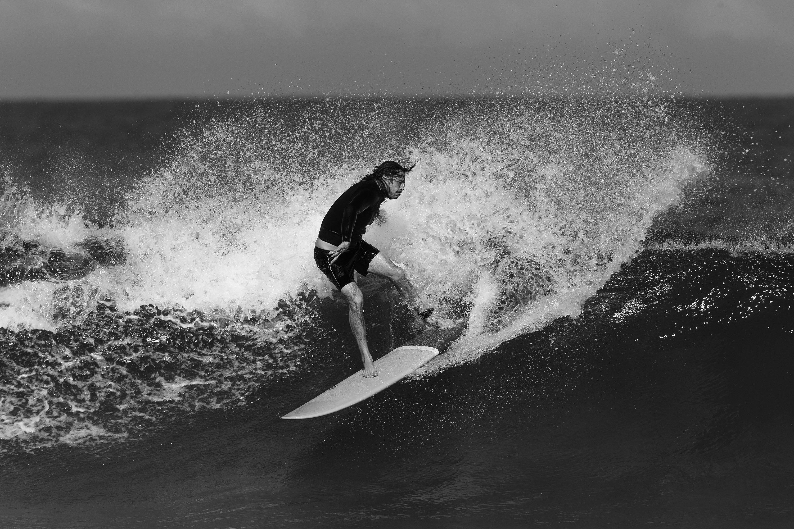
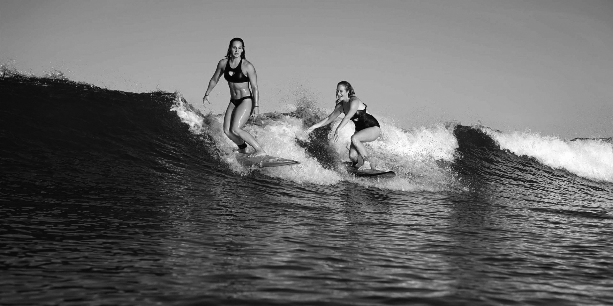
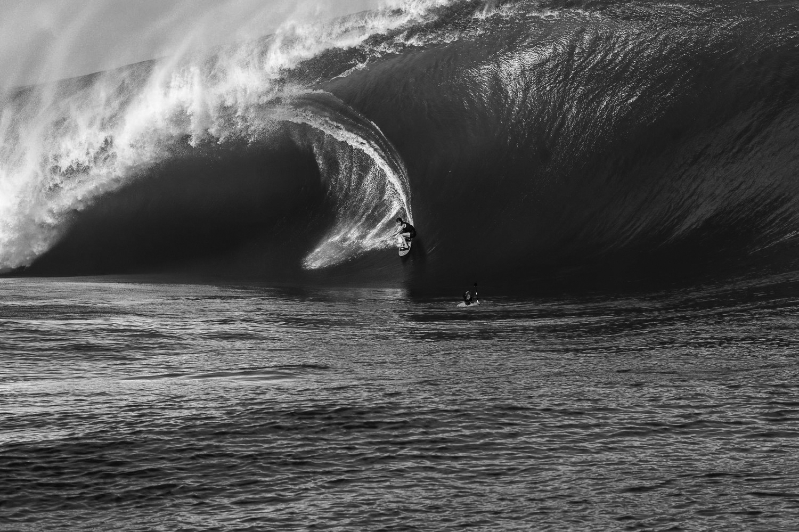
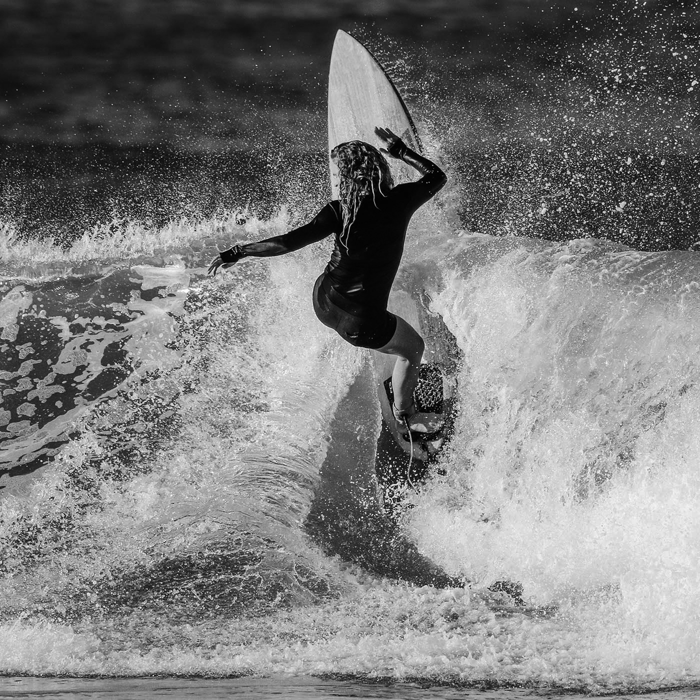
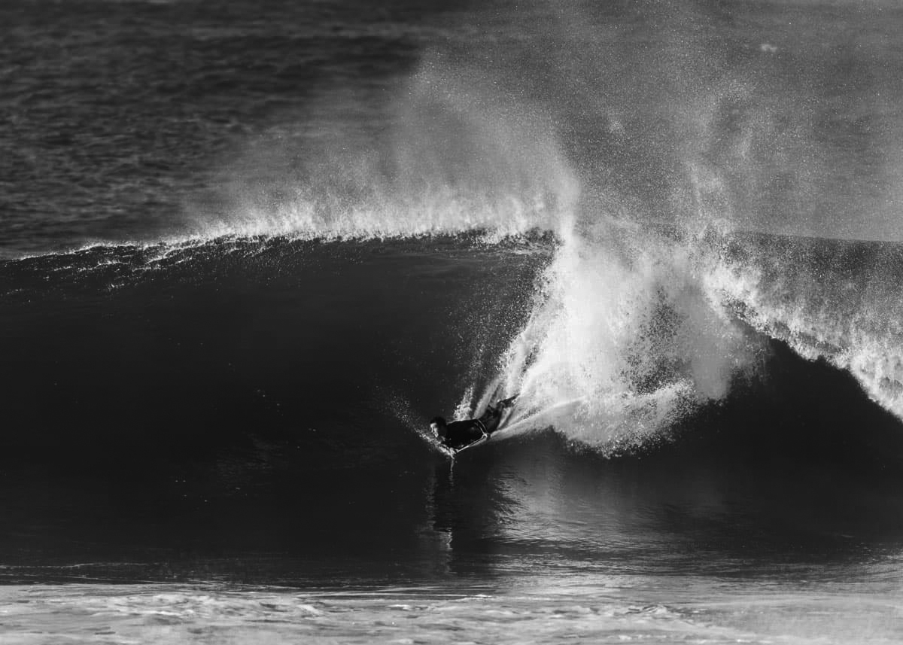

The length, width and depth of your board greatly affects its or the surfers performance in the water. The modern surfboard is made out of foam and is coated in fibreglass, making them light and strong. The length of the surfboard is very important. The longer the board the easier it is to paddle and to stand up on as it will feel more stable under the surfer's feet. Therefore a beginner should go for a longer board.Width. The width of the surfboard affects how stable the board is and its ease of control. As with the length, the wider the board, the more stability the board will have.Depth. The depth or thickness of the board determines how well it floats. The greater the floatation is, the smoother the ride on the wave when stood up and the easier it is to paddle. And so simple physics will tell you the heavier the surfer, the thicker the board should ideally be.
The most common board used for shredding and contest-style surfing. It sacrifices paddling ease for the sake of speed, power and control. They are generally around 5'6" to 6'4" long and between 16" and 19" wide, generally with a rounded square tail. A surfboard designed for the advanced surfer.
The fish surfboard differs from a shortboard in that it has a wider, rounder nose, a wider mid-section width and a 'swallow tail'. They are generally between 5'2" and 6'4" long and between 18" and 22" wide. They are designed to improve wave catching capability while maintaining speed and manoeuvring performance, ideal for small to medium sized waves.
The gun is long, narrow and pointy at the nose and tail (pin tail) for maximum rail contact. They range from 6' to 10' plus. They are ideal for big wave surfing, or for powerful, steep waves. Because of their shape they are easier to paddle out further to the big waves and easier to control on the steeper waves. The name derives from the term "elephant gun", and means the board is the surfers' gun for hunting down big/giant surf.

Otherwise known as a "cruizer" or "log". They are usually over 8' or 9' long, with a rounded nose. Longboards are much more stable in the water, they are easier to paddle and great for catching waves, making them ideal for learning on. However due to their size, they can be harder to get through the white water and oncoming sets to get "out the back". There is a great deal of style attached to riding a longboard. Where the radical sharp turns and airs possible with a shortboard are not possible on a longboard, other manoeuvres are like hang fives or tens, drop-knee turns, cross-stepping along the deck of the board… and even tandem surfing!

The malibu board is similar to the longboard in its shape and riding characteristics, but it's slightly shorter length and slimmer width and tail allow for sharper turns. You may also hear the malibu board referred to as a "mini-mal", which is simply as it sounds, a slightly shorter malibu. They either have one large fin or three smaller fins.
Funboards range in length between 6'6" and 8'0" and 20" to 22" wide. The funboard combines the paddling power of a longboard with the turning ability of a shortboard. These boards perform well in all conditions and are ideal for less experienced surfers.
Otherwise known as "foamies" or "softboards". They are designed for beginners… as because they are foam, they are easier to catch waves on, easier to stand up on and much more stable in the water. Also as they are foam they are less likel to hurt you or others around you, and so are an obvious choice for surf schools.
Otherwise known as a "boogie board". They are small, more rectangular boards you lay on rather than standing. Used by a variety of age groups, one of the safest options for families in small waves. Made from polystyrene, foam, wood or fibreglass. They can be very cheap, and are a lot of fun.
